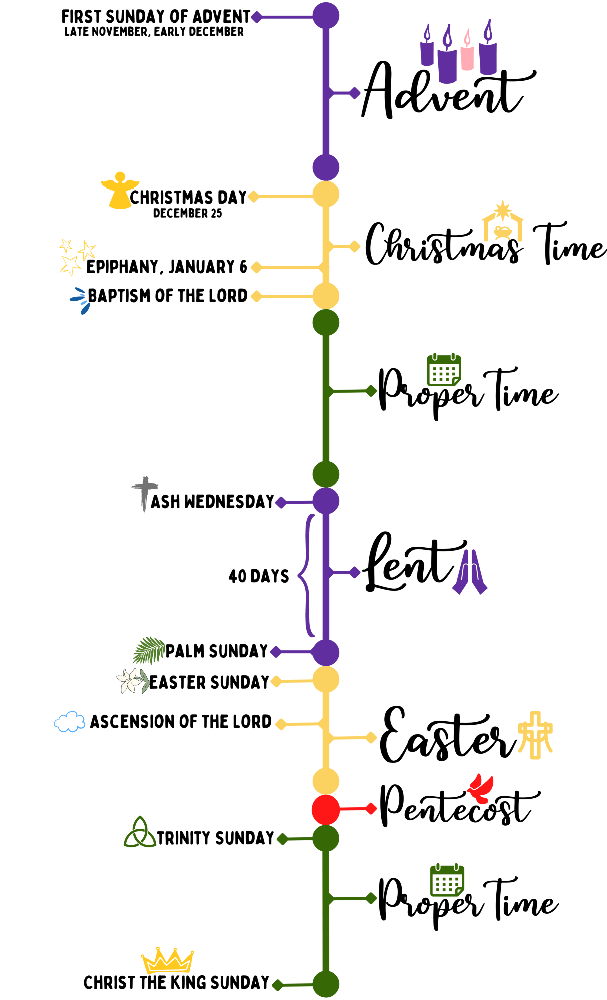

Welcome to Liturgical Lessons. Created by Rev. Jessi Higginbotham, a Presbyterian Church U.S.A. Minister of Word and Sacrament. Liturgical Lessons are lessons for Youth Groups, Sunday School, or other Youth Classes based on the Revised Common Lectionary. Lessons follow the Liturgical Calendar each year and are uniquely designed to be bright, colorful, short, sweet, and to the point. Lesson can be purchased individually, in groups by Liturgical Season or an entire calendar year. Liturgical Lessons are sold on Etsy.
The Liturgical Calendar
What is the Liturgical Calendar? The Liturgical Calendar is a cycle of different seasons that make up the church calendar. In the church, 'seasons' are periods of time that include major religious holidays (like Christmas and Easter).